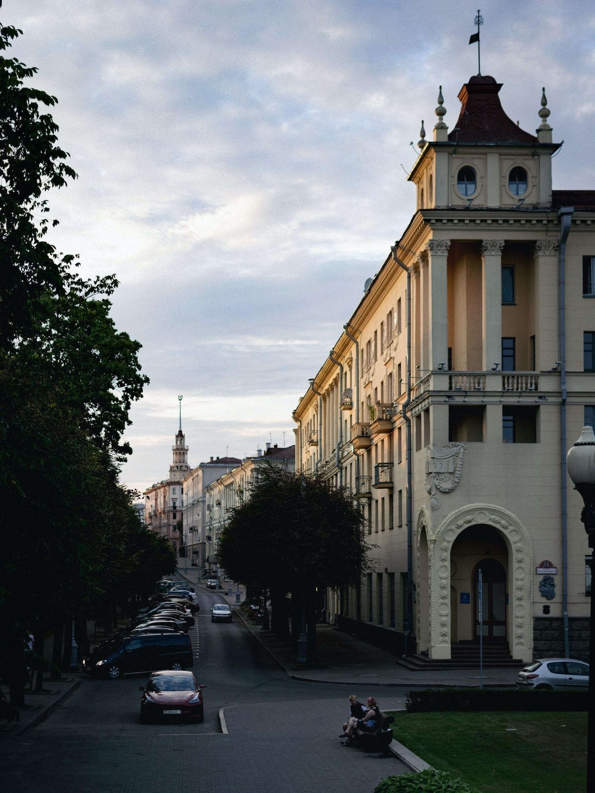
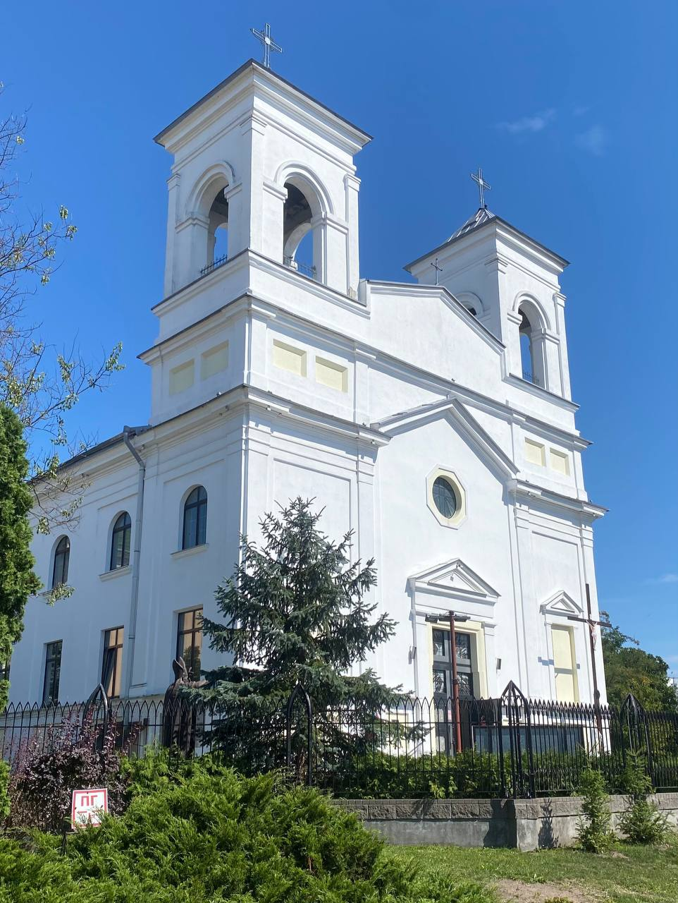
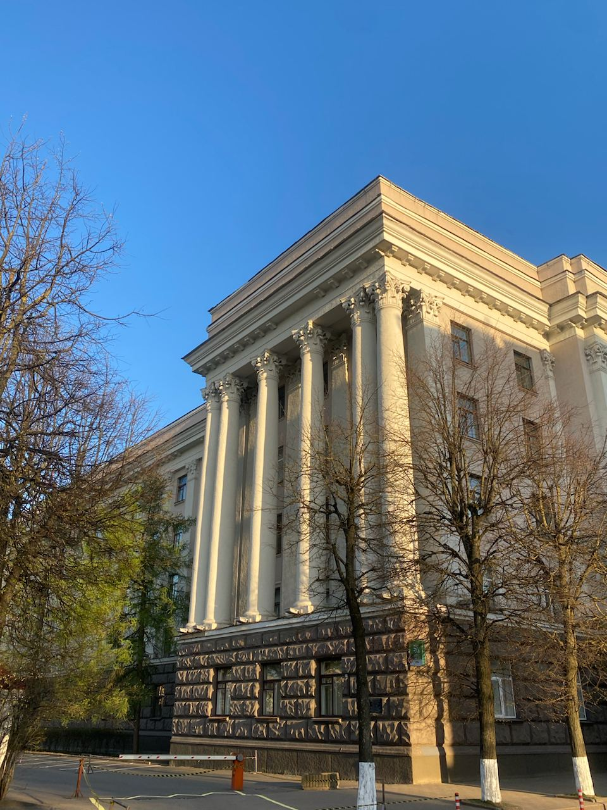
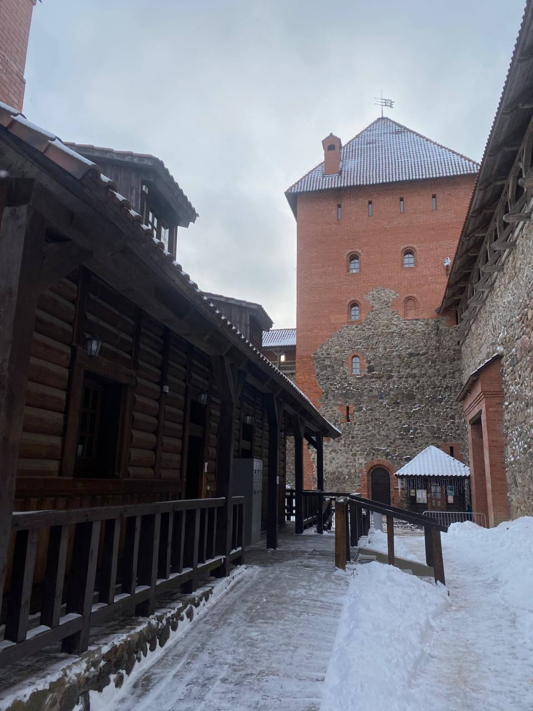
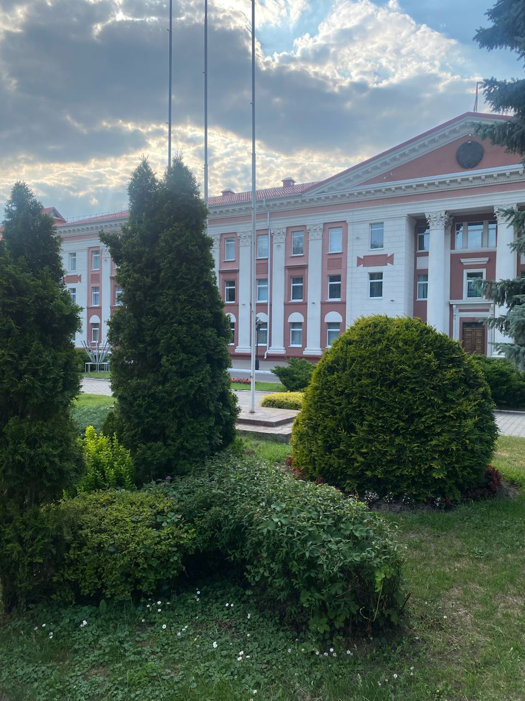
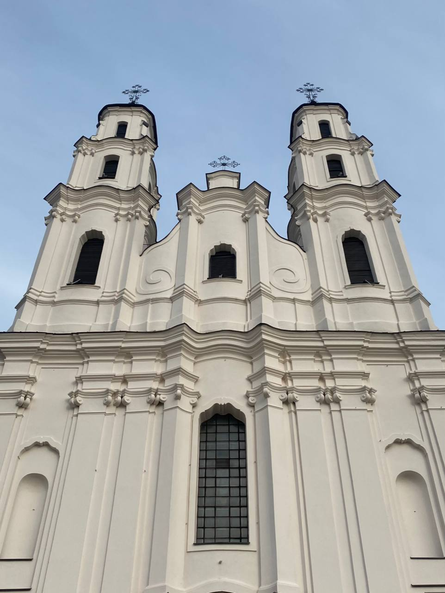
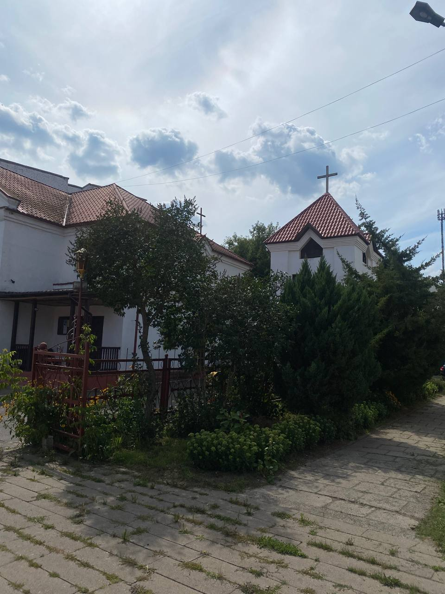
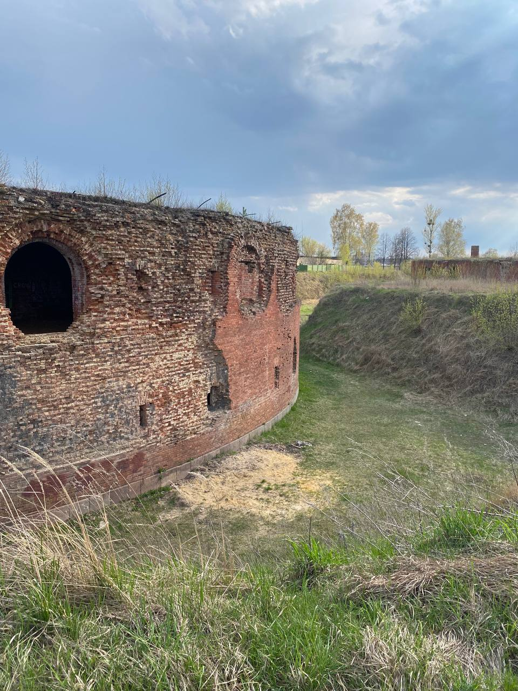

Города, которые я посетила недавно

Минск

Брест

Могилев

Лида

Мозырь

Глубокое

Жлобин

Бобруйск
Внутренний туризм в Беларуси
- Внутренний туризм в Беларуси играет важную роль в развитии отечественной туристической индустрии, способствуя созданию позитивной экономической и социокультурной динамики внутри страны. Многообразие природных красот, богатство исторического наследия и разнообразие культурных мероприятий делают Беларусь привлекательным местом для отдыха граждан.
- Одним из популярных направлений внутреннего туризма являются исторические достопримечательности. Замки, монастыри, церкви и музеи, распределенные по всей стране, предоставляют возможность гражданам Беларуси погрузиться в богатство своего национального наследия и узнать больше о истории своей страны.
- Также внутренний туризм в Беларуси поддерживает развитие экологического отдыха. Национальные парки, заповедники и природные резерваты предлагают возможности для активного отдыха на свежем воздухе, пеших походов, велосипедных прогулок и наблюдения за дикой природой.
- Сельский туризм также становится все более популярным внутренним направлением. Граждане могут посещать деревни, где предоставляются услуги гостеприимства в сельских домах, а туристы могут погрузиться в атмосферу деревенской жизни, попробовать национальные блюда и насладиться традиционной культурой.
- Развитие внутреннего туризма в Беларуси способствует созданию новых рабочих мест и обогащает социокультурную жизнь страны. Граждане могут открывать для себя новые аспекты своей родины, а страна в целом выигрывает от укрепления внутреннего туристического потенциала.
- Мой блог создан для того, чтобы поделиться личным опытом и показать беларусам прелести путешествия по родной стране.